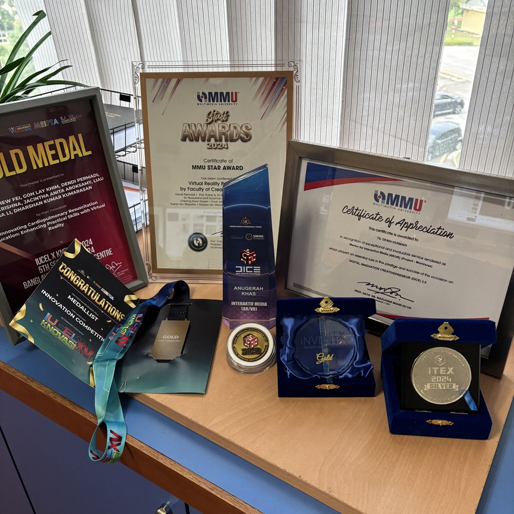
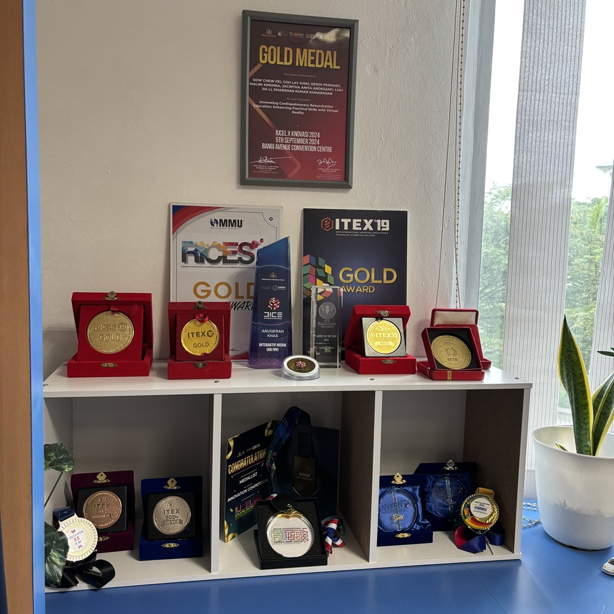
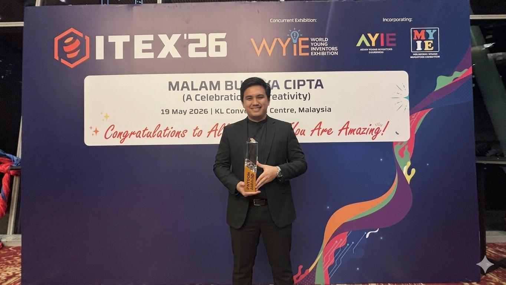
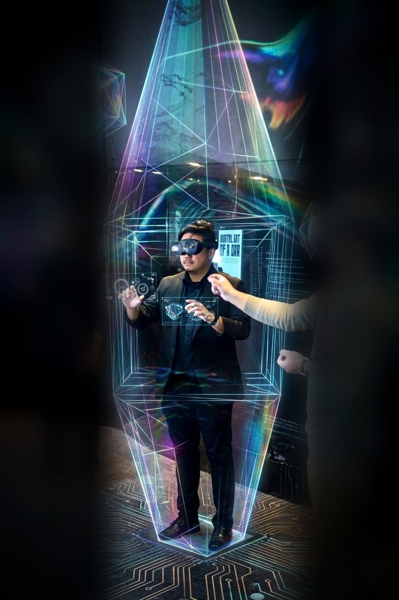

Dendi Permadi B.Mm., M.Sc., P.Tech.
Dendi Permadi is a Lecturer in Immersive Media at the Faculty of Creative Multimedia, Multimedia University (MMU), Malaysia, where he also serves as the Programme Coordinator for the Bachelor of Multimedia (Virtual Reality) and Assistant Coordinator for Bachelor in Immersive Media Design. He also Co-Leads the XR-AI Lab within the AIX Transformation Centre (MMUxMCMC). He is a certified Professional Technologist registered with the Malaysian Board of Technologists (MBOT). He holds a Bachelor of Multimedia from Universiti Utara Malaysia and a Master of Science in Creative Multimedia from Multimedia University, Malaysia, which included a postgraduate mobility programme at Inje University, South Korea.
Dendi was an Erasmus+ trainee at the Politecnico di Torino Italy, where he contributed to research projects at the Department of Structures, Building and Geotechnical Engineering (DISEG) in the “Drawing TO the Future” laboratory. His work focused on Building Information Modelling (BIM), Facility Management, Cultural Heritage, and Virtual and Augmented Reality applications. Before joining academia, Dendi worked in the industry as a Front-End Web Developer at Taukala Sdn. Bhd., and later as an AR/VR Developer at WR Media Sdn. Bhd. He also founded and managed an independent game development studio, Whitekites Games. His research interests include Immersive Media, encompassing Virtual, Augmented, and Mixed Reality, Game Design and Development, Artificial Intelligent (AI) and User Experience (UX). He also serves as a reviewer for the Journals Multimedia Tools and Applications and the International Journal of Creative Multimedia.
EDUCATION & PROFESSIONAL
2023. Professional Technologist, Malaysian Board of Technologist
2018. Erasmus+ Trainee, Politecnico di Torino, Italy
2015. Exchange Master Student, Inje University, South Korea
2014-2018. Master of Science in Creative Multimedia, Multimedia University Malaysia (Part-time mode)
2009-2012. Bachelor of Multimedia, Universiti Utara Malaysia
WORK
2017-Now. Programme Coordinator, Lecturer, Multimedia University Malaysia
2016-2017. AR/VR Developer, WR Media Sdn Bhd, Malaysia
2015-2016. Web Application Developer, Taukala Sdn Bhd, Malaysia
AWARD & RECOGNITION
2025. Champion (Best Projects & Systems) & Gold Award, iNVENTX Invention Competition
2025. Gold Medal, International Invention, Innovation, Technology Competition & Exhibition (ITEX)
2024. MMU Star Award
2024. Best Presenter Award, The 4th International Conference on Creative Multimedia (ICCM)
2024. Grand Prize and Special Award, Digital Innovation Creativepreneur, Ministry of Higher Education Malaysia
2024. Gold Medal, International University Carnival on E-Learning (IUCEL) kNOVASI
2023. Southeast Asia Top 8 Creative Lecturer, ED Ranks
2023. Best Paper Award, International Conference on Applied Science, Engineering, and Advanced Technology
2020. Gold Medal, Malaysia Technology Expo (MTE)
2019. Gold Award, Research Innovation, Commercialization and Entrepreneurship Showcase (RICES)
2014. Artist of the Year, ISS MMU Excellence Awards
2007. 1st Winner, Website Design Competition, TELKOM Sumatera Selatan
EXHIBITION
2025. Legacy of Hang Tuah. Weaving a Future in Harmony, Yumeshima Osaka Bay, Japan
2024. Johor Through The Eyes of An Artist. RefleksiSeratus, Komtar JBCC, Johor, Malaysia
2024. Perak Man. Cybernetics, Landscapes, Spiritualities. CIM Open Lab, Cyberjaya, Malaysia
2024. Congkak AR. Space: Emotion.Expression.Identity. Cyberjaya, Malaysia
2024. Perak Man. Spiritualities Landscapes, Telekom Museum, Kuala Lumpur
2023. Johor Through The Eyes of An Artist. Visions of Reality, Ruang Thinkcity, Johor Bahru
2023. Dulu, Kini & Masa Depan. Citra Nusa, Borneo Cultures Museum Kuching, Sarawak, Malaysia
MAGAZINE & INTERVIEW
2024. Inovasi AR Angkat Karya Tempatan. In Shahemy, A. (Ed.) Majoriti 7 – Adrenalin Metropolitan Magazine
2021. 4.0 Revolusi Digital: Generasi Millenial. Radio Television Malaysia (RTM)
2019. Adaptasi teknologi VR [MetroTv]. In Hasan, M. S. (Ed.) IT Metro: Harian Metro Newspaper, 38-39
2019. Permainan Reality Maya Leftenan Adnan. In Zulkifli, A. M. (Ed.) K2 Menyelami Hidup Anda: Kosmo



